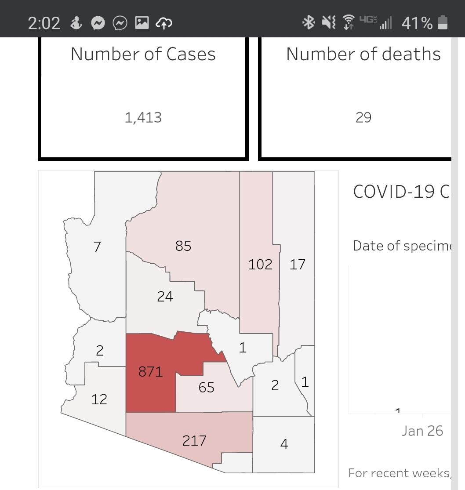

AZ counts still don't seem to reflect Navajo Nation


This was the reply from when I opened the first issue. I don’t think it’s correct.
"@careeningspace careeningspace commented 8 hours ago We have found through our investigative team that Navajo Nation numbers are reported to their respective states, but there may be a lag in the timing.:
I can get direct feedback from the Reporting team who investigated it.
All NM cases from NMDOH current as of 4/1/2020:
Bernalillo County: 148 Catron County: 1 Chaves County: 10 Cibola County: 4 (of which 1 Navajo?) Curry County: 5 Doña Ana County: 21 Eddy County: 4 Grant County: 1 Lea County: 2 McKinley County: 20 (of which 10 Navajo?) Otero County: 1 Rio Arriba County: 4 Roosevelt County: 1 Sandoval County: 32 San Juan County: 37 (of which 15 Navajo?) San Miguel County: 1 Santa Fe County: 48 Socorro County: 3 Taos County: 12 Torrance County: 3 Valencia County: 5
Parentheses are mine, matching the media report of Navajo Nation cases against the NMDOH list. Apparently none of the 6 deaths in NM are Navajo Nation.
So, what I said before stands: states do not get data from Navajo Nation. Navajo Nation gets data from states. Navajo Nation reports numbers extracted from state reports (states AZ, NM, and UT, potentially also CO). All these numbers are all duplicates.
AZ does get numbers from NN but they aren’t broken out by state.
This issue has been automatically marked as stale because it has not had recent activity. It will be closed if no further activity occurs. Thank you for your contributions!
This issue has been closed because it was stale for 15 days, and there was no further activity on it for 10 days. You can feel free to re-open it if the issue is important, and label it as “not stale.”
States generally do not report tribal data; generally they do not even receive tribal data.
I am in New Mexico and am involved but not currently employed in emergency management.